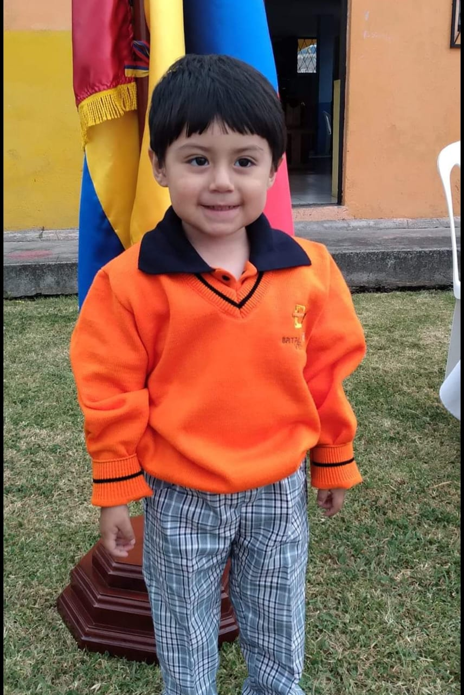

Mi Presentacion
Brandon Javier Pilco Loachamin,mejor conocido como "***",ecuatoriano con una edad de 20 años que su mejor compañia es una buena botella de sprit y su sillon
Todo positivo hay que estarMi resumen de la vida
No hay mucho que decir,mi familia es una igual que todas,algunos problemas por aqui otros por halla pero siempre teniendo buenos momentos
Desde los 15 años fueron los mejores tiempos hasta la actualiadad es lo que pienso yo,ya si hablamos de los 15 para abajo,eso es otra historia que no quiero ni pensar,ni mencionar

Sobre mi
Yo me considero alguien normal a mi estilo,con varias habilidades distintas de las cuales no pienso mencionar
Moyermente me la paso indagando en internet,buscando cosas interesantes,algunas veces se encuentra cosas buenas y otras muy graves ademas me la paso mayormente jugando o practicando alguna actividad de las que me sirvan
Mis Pasatiempos

Pasatiempo

Pasatiempo

Pasatiempo

Pasatiempo
Datos Extras

Anedocta 1
Antes de los 15
Estuve a punto de morir tres veces:la primera fue por un virus,luego por un accidente y por ultimo la inseguridad del pais casi siendo secuestrado y lo demas
Anecodta 2
Despues de los 15
En toda la vida considerare que la mejor epoca fue los 16 a 18 años debido a que tuve lo que todos quieren "tiempo",hize muchas cosas y tantas cosas pasaron que me hacen sentir bien recordarla